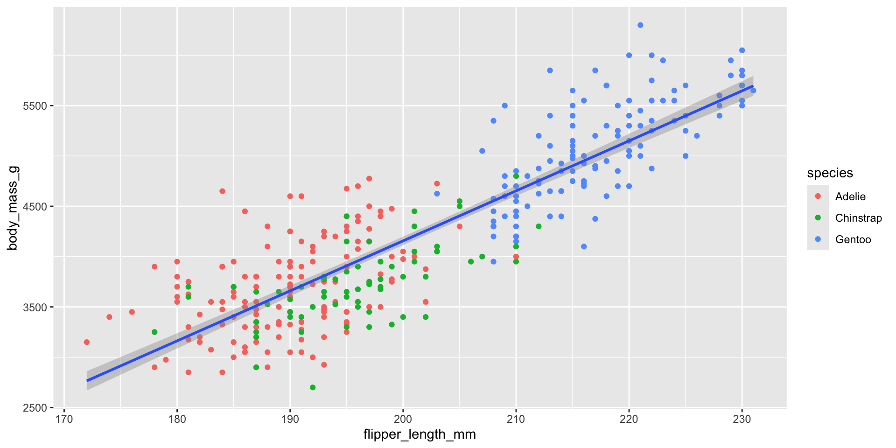
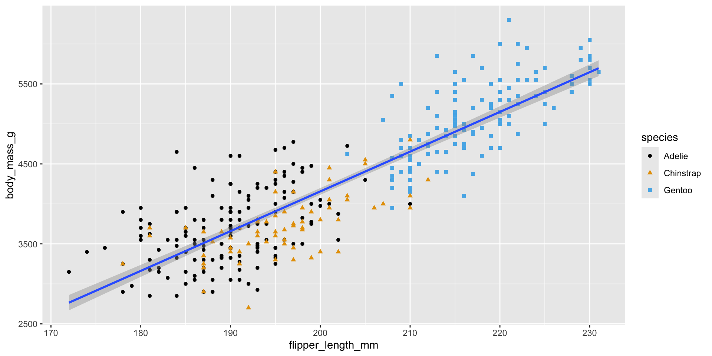

Introduction to Data Visualization
Learning objectives:
- Produce a simple plot with
ggplot2 - Use different
aesthetic mappings andgeom_*()functions to produce more complex plots - Visualize distributions and relationships in data
- Produce small multiples with
facet() - Make the plot to the right

Creating a ggplot: geom_*()

Global vs. Local Aesthetics
Global aesthetics:
- in
ggplot() - apply to all layers

Local aesthetics:
- in
geom_*() - apply only to that layer.

Non-colorblind vs Colorbling
Non-colorblind compatible:

Colorblind accessible:

Visualizing Distributions: Barplots
Quickly check out variable distributions.
Barplots help with categorical variables.

Two Categorical Variables
- Try a bar plot.
- Why use fill here? Why not color?

Two Numerical Variables
- Scatterplots shine here.

Summary
- Produce a simple plot with
ggplot2 - Use different
aesthetic mappings andgeom_*()functions to produce more complex plots - Visualize distributions and relationships in data
- Produce small multiples with
facet() - Make the plot to the right